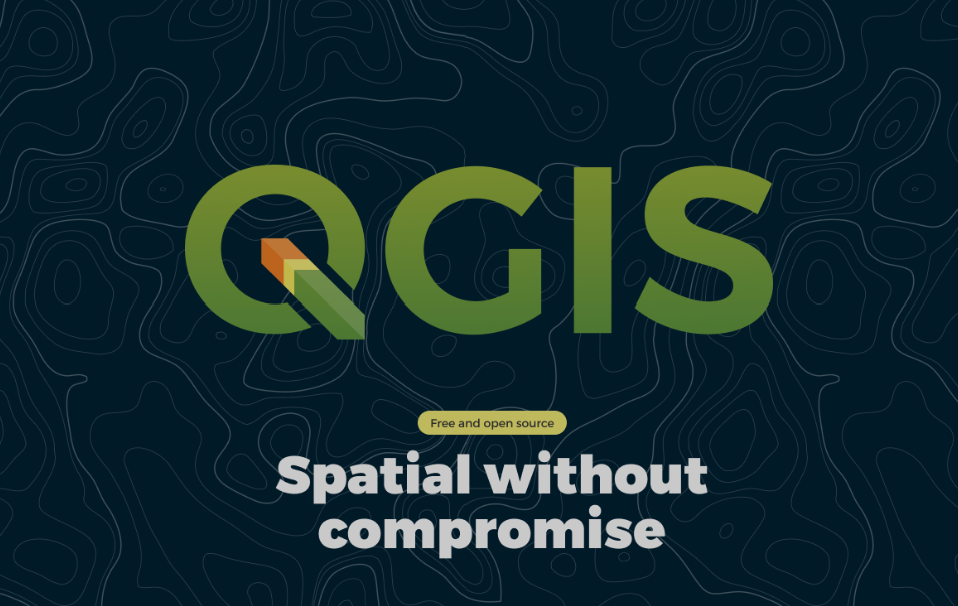
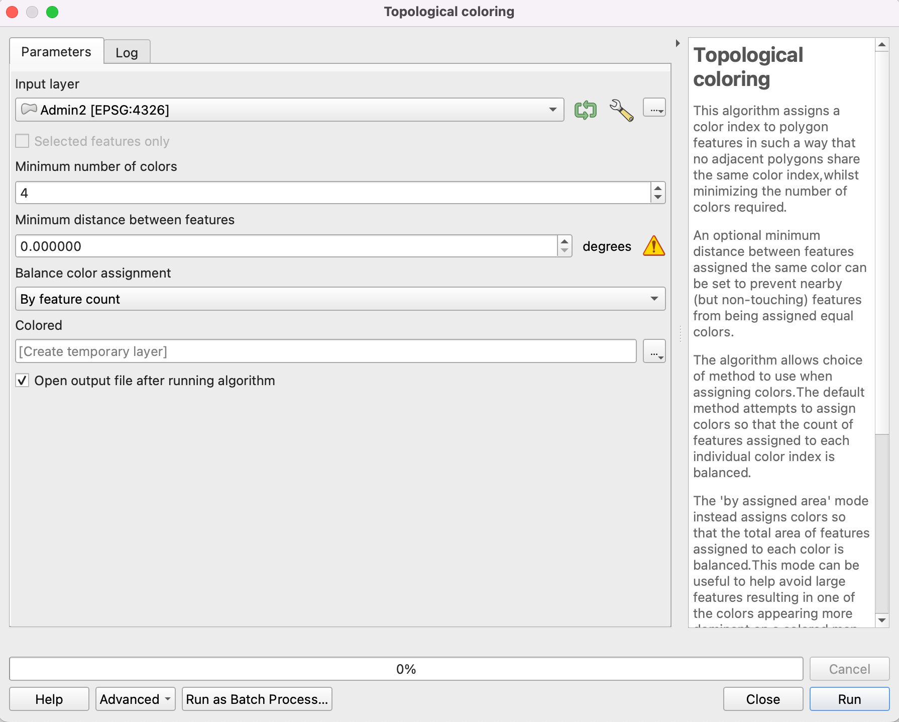

1.3. Getting started with QGIS#
1.3.1. Introducing QGIS#

QGIS is an open source geoinformation system software. That means the source code is available for everyone, making QGIS a free application. The entire source code can be viewed and downloaded on qgis/QGIS.
QGIS is a desktop software: that means you get a program that opens up on your computer as a window with buttons you can click, forms you can fill out to do tasks, and it’s generally a visual interactive experience.
You may view, edit, capture and analyze spatial data or create printable maps with it. QGIS was created in 2002 and is a project of volunteers. And it is constantly changing.
QGIS is backed by a large community of users, so it’s easy to find solutions to technical issues by using QGIS forums, blogs, or sub-reddits. The official QGIS community can be found here. Additionally, a list of helpful websites can be found on the wiki here.
Note
Keep in mind that as QGIS gets developed further, the interface and functions of QGIS are subject to changes. The material written for this platform is referring to QGIS Version 3.36. If the training material is no longer up to date, take a look at the QGIS Documentation.
Attention
QGIS is constantly changing, with new features being added. Because of this, the newer versions can have changes or even bugs (such as crashes). However, there is always a stable version available, which is supported for longer. This version is called Long-term release (LTR).
1.3.2. Working with QGIS#
In QGIS, you create projects where you visualise and manipulate geodata. There are three main workflows you will use: data collection and creation, data processing, and data visualisation. Geodata is loaded into QGIS projects which will be represented as layers on a map canvas.
Hint
There is a lot of complex math involved in the GIS, but QGIS takes care of it on it’s own and you don’t need to have a deep understanding of maths and algorithms to use QGIS. As long as you can use Excel and Powerpoint, you shouldn’t have trouble learning how to use QGIS.
QGIS offers tools to create your own geodata. For example, with the digitizing tools, you can create points, polygons, and lines with information which can represent spatial information. Furthermore, georeferencing lets you add geographic information to various types of data, such as satellite imagery or hand-drawn maps. You will learn how to create geodata and how to georeference data in module 2.
Sometimes working with GIS requires you to go and collect the data in the field. In this case, you can use web and mobile apps.
QGIS offers a wide range of algorithms to process geodata. In the following modules, you will get to know a number of algorithms that are especially useful for GIS in humanitarian work. You will learn more about data processing and manipulation in module 2 onwards.
QGIS lets you visualise geodata and create maps to communicate information. It does so by assigning symbols and colours to different elements in your geodata. Assigning a symbology to the geodata is one of the main skills you will develop as a GIS-user and a good visualisation of data is immensely useful when communicating insights. You will learn how to assign symbols in Module 4: Visualisation of Geodata and Map Making
A note on plugins
In addition to the algorithms included in the standard installation, QGIS offers plugins which add additional functionality to the QGIS application. These plugins are developed by independent organizations or the QGIS-community. For example, plugins let you connect to online services such as OpenStreetMap, or add more algorithms to process your data. These can be very useful for certain use cases. There are also plugins specifically designed for humanitarian work. You will learn more about plugins in the following modules. If you want to know how to install them, look into the wiki.
1.3.3. Opening a new project in QGIS#
Open QGIS like any other program on your computer. The start screen of QGIS usually shows you the projects you worked on recently and the option to create a new project.
There are two options to create a new project:
On the start screen click on
Project Template

In the upper left corner click on
Project->New Project
1.3.4. Overview of the QGIS Interface#
The interface of QGIS is at first glance quite complex. However, once you know all the components you will be able to orientate yourself quickly. Here you can find a description of all components of the interface.

Fig. 1.14 QGIS User Interface. Source: BRC#
Layers panel: The layers list shows all layers/files that are loaded in the project. You can show/hide layers and set other properties.
Toolbars: Toolbars are shortcuts to execute frequently used commands. For example, there are special toolbars for vector and raster files, but also general ones for saving your project, etc. The toolbar contains, among other things, a list of all the commands you can use. The toolbar also contains the processing toolbox, which is used later in many of the wiki videos.

Map Canvas: The map canvas is the central component of every GIS programme. This is where the geodata are displayed. The map view has a projection which does not always have to correspond to the projection of the layers.
Coordinates and Scale: Here you can find information about the scale of the map canvas, as well as read the coordinates of the mouse pointer.
Browser panel: The browser panel let’s you browse the files on your computer and load datasets into your QGIS project.
Search bar: Here you can search for tools and layers in QGIS. If you don’t know where to find a tool, you can try here. You can also type in coordinates to find them on the map canvas.
Exercise: Create a new QGIS project
In your “GIS_Training” folder, create a subfolder called “My_First_Project”.
Open QGIS
Click on
Project->New ProjectIn the top-left corner, click on
Project->Save as, browse to your Projects folder and save the project as “Session1”Click on Save as, browse to your Projects folder and save the project as “My_First_Project”
Open your your folder and check the .qgz file that you just created.
Attention
If you see a * in the title bar, to the left of the name of your project, this means that the project has changes which are unsaved. Since QGIS can crash from time to time, make sure to save your project periodically to avoid losing progress.
1.3.5. Buttons and Shortcuts#
In QGIS, mouse control allows users to interact with the map canvas, enabling functions such as panning, zooming, and selecting features.
Hotkeys in the QGIS interface provide convenient shortcuts for various commands, enhancing efficiency and speeding up workflow. You can find all hotkeys below.
Navigation in the map view
Name |
Menu option |
Shortcut |
Description |
|---|---|---|---|
Map pan |
|
Space, Page Up, Page Down or the Arrow Keys |
Move the map |
Pan map to selection |
|
Pans the map to the selected element |
|
Zoom in |
|
Ctrl + Alt + + or mouse wheel |
Zoom into the map |
Zoom out |
|
Ctrl + Alt + - or mouse wheel |
Zoom out of the map |
Zoom full |
|
Ctrl + Shift + F |
Zoom to the selected element |
Zoom to selection |
|
Ctrl + J |
Zoom to the selected element |
Zoom to layer |
|
Zoom to the selected layer |
|
Zoom to native resolution |
|
Zoom to the native resolution (100%) |
|
Zoom last |
|
Zoom to the last zoom |
|
Zoom next |
|
Zoom to the next zoom |


Project management
Name |
Menu option |
Shortcut |
Description |
|---|---|---|---|
New Project |
|
Ctrl + N |
Create a new project |
Open Project |
|
Ctrl + O |
Open an existing project |
Save |
|
Ctrl + S |
Save the project |
Save as… |
|
Ctrl + Shift + S |
Save the project as… |
Properties |
Ctrl + Shift + P |
Open the project properties |
|
New print layout |
|
Ctrl + P |
Opens the Dialog to create a new print layout |
Search |
Ctrl + K |
Opens the search bar |


Layer management
Name |
Menu option |
Shortcut |
Description |
|---|---|---|---|
Data source manager |
|
Ctrl + L |
Add a new layer |
New GeoPackage layer |
|
Ctrl + Shift + N |
Add a new GeoPackage Layer |
Add vector layer |
|
Ctrl + Shift + V |
Add a new vector layer |
Add raster layer |
|
Ctrl + Shift + R |
Add a new raster layer |
Remove selected layer |
|
Ctrl + D |
Remove the selected layer |
Toggle layers view |
Ctrl + 1 |
Toggle the layers view |
|
Toggle browser view |
Ctrl + 2 |
Toggle the browser view |


Analysis Tools
Name |
Menu option |
Shortcut |
Description |
|---|---|---|---|
Identify Features |
|
Ctrl + Shift + I |
Identify features on the map view by clicking on them |
Select feature |
|
Select a feature by area or single click |
|
Select feature by value |
|
F3 |
Select features by value |
Open Attribute table |
|
F6 |
Open the Attribute table |
Open Attribute table with selected features only |
|
Shift + |
Open the Attribute table with selected features only |
Open Attribute table with visible features only |
|
Ctrl + |
Open the Attribute table with visible features only |


Advanced Tools
Name |
Menu option |
Shortcut |
Description |
|---|---|---|---|
Processing Toolbox |
|
Ctrl + Alt + T |
Opens the Processing Toolbox |
Python Console |
|
Ctrl + Alt + P |
Opens the Python Console |


{kind=link}
1.3.6. Navigating on the Map Canvas#
Optional: Now it’s your turn!
You can follow the steps below in your own QGIS project. Download this dataset and drag and drop the wb_countries_admin0_10m.gpkg onto the map canvas. The data set are the official country boundaries by the World Bank.
Download the Worldbank Official Boundaries
1.3.6.1. Moving the map view#
To move on the map canvas with your mouse cursor you need to toggle the hand button.

You can always move on the map canvas with arrow keys on your keyboard.
1.3.6.2. Zooming in the map view#
The easiest way to zoom on Map Canvas is by scrolling.
Or with the hotkeys Ctrl + + and Ctrl + -

Another way is to use the zoom buttons in the toolbox panel.
1.3.7. Toolbox & Toolbars#
Basically, all the functionality, tools and applications of QGIS are organised in the Toolbox. Some Tools have their own toolbars which you can add to your QGIS interface.
1.3.7.1. Open Toolbox#
To open the Toolbox in QGIS click on the gearwheel button. Or click on Processing -> Toolbox

You can use the search bar to find specific tools.
Tip
There are cases when you want to do something in QGIS but do not know the exact tool. Sometimes it’s worth just looking for what you think the name of the tool might be.
1.3.7.2. Show and hide displays and toolbars#
There are toolbars and panels for many different tasks. To avoid an overcrowded interface it is smart to only activate specific toolbars or panels only when you really need them.
To add or remove toolbars from your interface click on View -> Toolbars -> Check or uncheck the toolboxes you want to add or remove.
To add or remove panels from your interface click on View -> Panels -> Check or uncheck the panels you want to add or remove.
1.3.7.3. Move and arrange toolbars#
At each toolbar there is a field of two dotted lines. If you move the mouse pointer over it until an arrow cross appears and then hold down the left mouse button, you can move the toolbar. This allows an individualised arrangement of your own tools. By compressing all toolbars into a few lines, the map view window can also be enlarged.
1.3.8. Save & Open QGIS Projects#
To save progress or to open an existing project in QGIS is very similar to programs like MS Word. However, there is one BIG difference. In QGIS, the geodata you work with is not saved in your QGIS project file. Instead, the project file only contains the file paths where the geodata were located at the time the project was last saved on the PC. If the location of this geodata is subsequently changed, the error message “handle unavailable layers” will appear when the project is opened again.
Good data organisation with a fixed and well-thought-out folder structure prevents such problems.
Warning
Always organize your data! Check out the Wiki article on Standard Folder Structure for more info.
1.3.8.1. Open Projects#
To open an existing QGIS project click on Project -> Open… -> Navigate to your project and open it.
1.3.8.2. Save Projects#
When you save for the first time: To save the QGIS project you are working on click on
Project->Save as…-> Navigate to the folder where you want to save the project -> Give the project a name ->SaveWhen saving your progress: To save progress in a project that was already saved somewhere on your computer:
Click on
Project->Save.
1.3.9. Warning icons#
It can be that while working with QGIS, you come across orange warning icons. This indicates that you should pay attention. To understand what the warning icon means, hover over it with your mouse and explanatory text will appear. For example, in warning_icon_example, the warning icon indicates that the units of measurements are degrees, which are not constant (the distance between 1⁰ of longitude is much greater at the equator than at the poles).
{kind=link}

Fig. 1.15 An example of a warning icon while adjusting the parameters of a processing tool.#
1.3.10. Where to find help#
Connect with us!
If you have more questions before or after the training or require assistance, do not hesitate to reach out to us by writing an email to gis-training-platform@heigit.org.
Common errors and issues
We have collected a list of Common errors and issues. If you ever find yourself at your wits end (which can happen a lot when working with QGIS!), try finding the solution to your problem here.
There is also a big and vibrant QGIS community online. If you are struggling with a specific function, or have questions on how to achieve GIS operations that are not covered on this platform, you can find help on dedicated QGIS forums:
QGIS documentation: https://docs.qgis.org/3.34/en/docs/index.html
QGIS user forum on stackexchange: https://gis.stackexchange.com/?tags=qgis
QGIS user groups: https://www.qgis.org/en/site/forusers/usergroups.html#qgis-usergroups
QGIS telegram channel: https://t.me/joinchat/Aq2V5RPoxYYhXqUPoxRWPQ
Additionally, there is a large amount of youtube tutorials, online guides and learning material for specific GIS-operations, so it is always a good idea to do a quick google search. Amongst others, the QGIS documentation also offers Exercises and Training Material, as well as a Gentle Introduction to QGIS.
1.3.11. Self-Assessment Questions#
Test your knowledge
Take a moment to recapitulate what you’ve learned in this chapter by answering the questions below:
What is QGIS, and what does it mean that it is “open source”?
Answer
QGIS is a Geographic Information System (GIS) software that lets users view, edit, analyze, and produce maps from spatial (geographic) and attribute data. Being open source means that its source code is freely available: anyone can inspect, modify, and distribute it (under license). It also implies that there is a community of users and developers contributing to it, and that the software is generally available at no cost.
Name three things you can do working with QGIS.
Answer
Load spatial data (vector or raster), visualize it on a map
Edit or digitize features (e.g. adding points, lines, polygons)
Perform spatial analysis (e.g. buffer, overlay, join), or produce map outputs (export to PDF/image)
How do you know if a QGIS-project has been saved or not?
Answer
Typically, QGIS will show an asterisk (*) next to the project name or in the window/tab title if there are unsaved changes. If no asterisk appears (or if “Save” is greyed out), that suggests the project is already saved (i.e. up to date).
How do you open a QGIS-project?
Answer
You can open a QGIS project via the File menu → Open Project (or “Open Project” button in toolbar), then browse for a .qgs or .qgz file. Alternatively, double-clicking the project file (if associated on your system) may also open it in QGIS.
How do you show and hide panels or toolbars?
Answer
In the top bar, use the View menu → Panels or Toolbars submenus to toggle (check/uncheck) specific panels or toolbars.
Where can you find help when you are encountering problems with QGIS?
Answer
On our Common errors and issues page
By looking into the QGIS documentation
By searching for tutorials on youtube